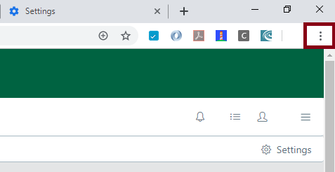
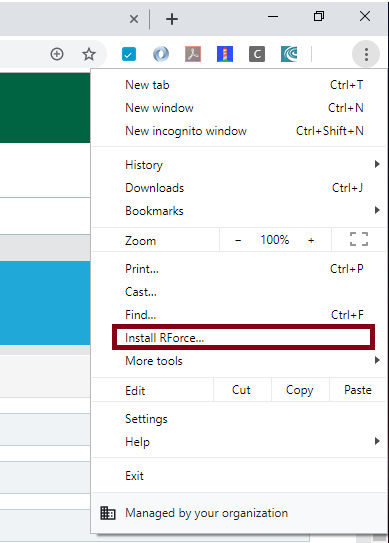
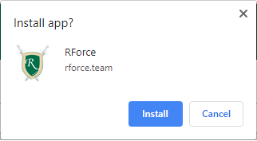

RForce is now a Progressive Web App that can be installed on both your desktop and Android devices. iOS device support will also be available shortly, so the Desktop version has been discontinued.
Please follow these instructions to uninstall RForce Desktop from your computer, as well as to install the new RForce PWA:
Uninstall RForce Desktop
1) Go to
Apps and features applet within System Settings.
2) Click on
RForce Desktop and select
Uninstall.
Install RForce PWA
1) Open Google Chrome and navigate to
https://rforce.team.
2) Once you have logged onto the application, cick on the 3 dots menu at the top-right corner of the browser window.

3) Select
Install RForce

4) Click on
Install.

And that's it! You'll find the RForce PWA icon on your desktop.